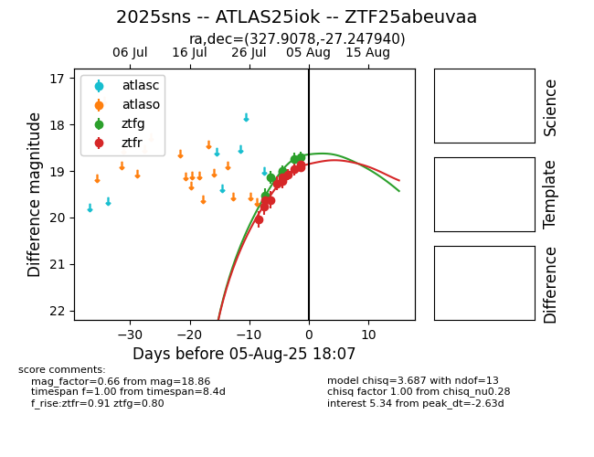

Target 2025sns at 2025-08-27 05:27, see:
FINK: fink-portal.org/ZTF25abeuvaa
Lasair: lasair-ztf.lsst.ac.uk/objects/ZTF25abeuvaa
ALeRCE: alerce.online/object/ZTF25abeuvaa
TNS: wis-tns.org/object/2025sns
YSE: ziggy.ucolick.org/yse/transient_detail/2025sns
alt names
ZTF25abeuvaa (ztf,fink)
2025sns (tns,yse)
ATLAS25iok (atlas)
coordinates:
equatorial (ra, dec) = (327.9078,-27.24804)
galactic (l, b) = (22.0646,-50.23944)
photometry
last atlaso=19.29, ztfg=19.23, ztfr=19.03
1 atlaso, 13 ztfg, 21 ztfr detections
